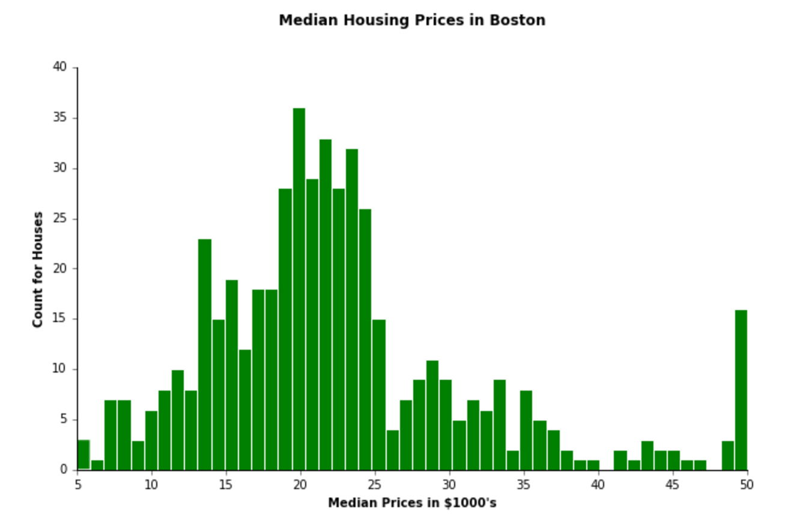
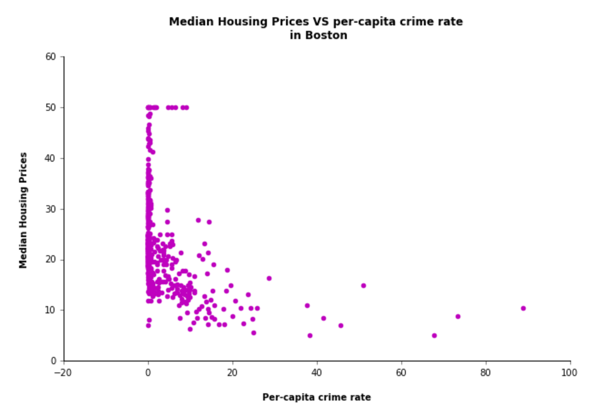
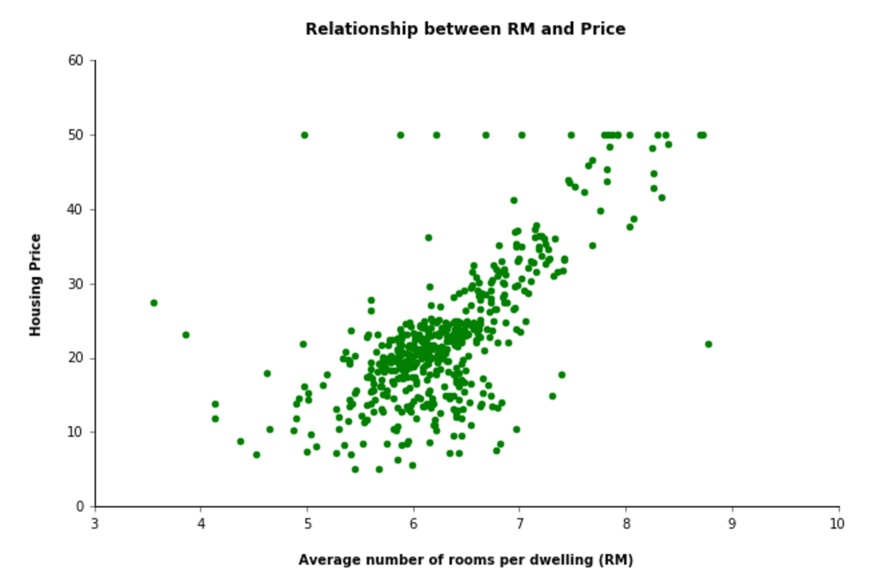
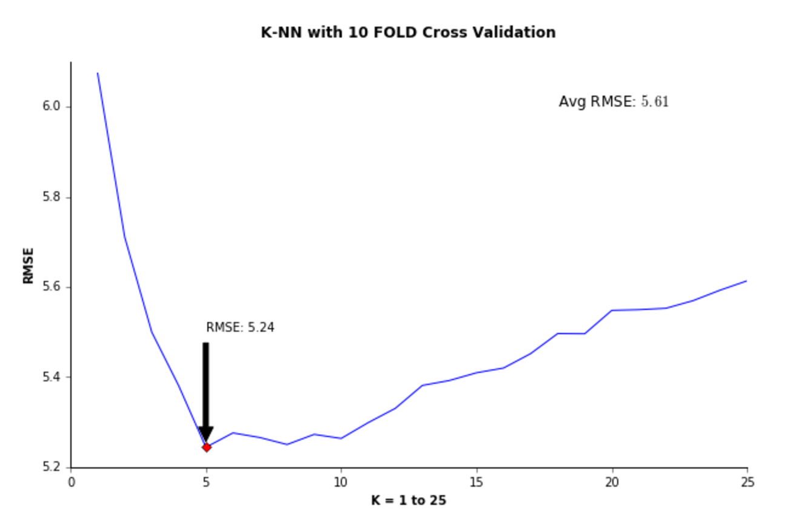

The Boston housing data is available online at Boston housing data - UCI. The data consists of 14 features -
- CRIM per capita crime rate by town
- ZN proportion of residential land zoned for lots over 25,000 sq.ft.
- INDUS proportion of non-retail business acres per town
- CHAS Charles River dummy variable (= 1 if tract bounds river; 0 otherwise)
- NOX nitric oxides concentration (parts per 10 million)
- RM average number of rooms per dwelling
- AGE proportion of owner-occupied units built prior to 1940
- DIS weighted distances to five Boston employment centres
- RAD index of accessibility to radial highways
- TAX full-value property-tax rate per $10,000
- PTRATIO pupil-teacher ratio by town
- B 1000(Bk - 0.63)^2 where Bk is the proportion of blacks by town
- LSTAT % lower status of the population
- MEDV Median value of owner-occupied homes in $1000's
I performed some descriptive analysis to explore the patterns in the data. Below are some of the results.
Boston Hosuing Prices
Crime rate index vs Hosuing prices
How average number of rooms affect housing prices
As we can see that there is a positive correlation between RM and housing prices.
First step is to divide your data into training and testing. This is very important to ensure that the optimized final model runs on testing data to make accurate predictions. Below is the code snippet for splitting the data
# Create random indices for training dataset
train_idx = np.random.choice(bdata.target.shape[0], size=round(float(.66*bdata.target.shape[0]),0), replace = False )
# Create random indices for test dataset
test_idx = range(506)
test_idx = [elem for elem in test_idx if elem not in train_idx]
# Select bdata.data for training dataset
bdata_train = bdata.target[train_idx]
bdata_test = bdata.target[test_idx]
# Length of training and test dataset
print "Length of Training set", len(bdata_train)
print "Length of Test set", len(bdata_test)
Second step is to normalize the data which is very required for nearest neighbor. Below is the code snippet for a generic normalization function that takes as input an array of values for a given feature, and returns the normalized array (subtract the mean and divide by the standard deviation).
def normalize(raw_data):
# Generate an empty array of length of raw_data
normalized_data = np.empty(len(raw_data))
# Calculate mean of raw_data array
raw_data_mean = np.mean(raw_data)
# Calculate standard deviation of raw_data array
raw_data_std = np.std(raw_data)
# Normalize each value in the array by subtracting mean of the raw_data and dividing it by raw_data std
for i in range(len(raw_data)):
normalized = (np.subtract(raw_data[i],raw_data_mean))/raw_data_std
normalized_data[i] = normalized
return normalized_data
To prevent overfitting of data, K-fold cross validation is used. Root mean squared error (RMSE) is calculated to see the accuracy of the model. Below is the code snippet for K-nearest negihbor with K-fold cross validation algorithm.
def compute_rmse(predictions, yvalues):
rmse = np.sqrt(np.mean((np.subtract(predictions,yvalues))**2))
return rmse
def distance(x1, x2, L):
"""Given two instances and a value for L, return the L-Norm distance between them"""
e = 1/float(L)
dist = (np.sum((np.subtract(x2,x1))**L))**e
return dist
def knn(trainingSet, testInstance, L, K):
"""Given training and test set array with L for norm distance and K for
required number of neighbors, Return RMSE"""
#start_time = time.time()
#avgRMSE = []
actuals = []
predictions = []
# Iterate over the test set and find nearest neighbors for each test instance
for x in range(len(testInstance)):
distances = []
# Compute distance between each test instance with data in train
for i in range(len(trainingSet)):
dist = distance(testInstance[x][1:], trainingSet[i][1:], L)
# Append the cacluated distance to the training instance
distances.append((trainingSet[i], dist))
# Sort the data on dist column by ascending
distances.sort(key=operator.itemgetter(1))
neighbors =[]
# Get number of K neighbors
for j in range(K):
neighbors.append(distances[j][0])
price = []
# Get the price from first column in the neighbors array
for k in range(len(neighbors)):
price.append(neighbors[k][0])
# Append average price in predictions list
predictions.append(np.mean(price))
# Append each test instance actual to actuals list
actuals.append(testInstance[x][0])
# Compute RMSE
rmse = compute_rmse(predictions, actuals)
#print "RMSE is: ", rmse
#print "Time taken: " + str(round(time.time() - start_time,2)) + " seconds"
return rmse
def k_fold_knn(data, L, K):
"""Given an array of data with price and features with L,
returns RMSE for each fold and average RMSE for 10 fold CV
using K-NN algorithm as written in function knn()"""
start_time = time.time()
avgRMSE = []
# Shuffle data to choose random data for samples
#np.random.shuffle(data)
# Generate indices to generate 10 samples of equal sizes
sample_idx = list(partition(range(len(data)),int(len(data)/10)))
# Adjusting for extra records as we have 506 records
# 9 samples with equal partition of 50 records each and the last sample will have 56 records
if len(sample_idx) > 10:
sample_idx[9] = sample_idx[9] + sample_idx[10]
sample_idx.remove(sample_idx[10])
# Set range to 10 for 10 fold cross validation
for k in range(10):
# Set indices with sample size of 50 for test
# This will also insure that for every iteration of k, we will have a different test data
test_idx = sample_idx[k]
# Set indices for training set
train_idx = range(len(data))
train_idx = [elem for elem in train_idx if elem not in test_idx]
# Select test data using test indices from data provided by the user
test_data = [data[i] for i in test_idx]
# Select training data using training indices
train_data = [data[i] for i in train_idx]
# Compute RMSE using knn()
rmse = knn(train_data,test_data,L,K)
avgRMSE.append(rmse)
#print "Average RMSE for 10-FOLD CROSS VALIDATION with K=3 for KNN: ", np.mean(avgRMSE)
#print "TOTAL TIME TAKEN FOR 10-FOLD CV : " + str(round(time.time() - start_time,2)) + " seconds"
return np.mean(avgRMSE)
# Run K-fold with K-NN using knn() and k_fold_knn()
def main():
start_time = time.time()
# Compute RMSE using k_fold_knn() on normalized data
RMSE = k_fold_knn(bdata_cv_norm,2,3)
print "Average RMSE for 10-FOLD CROSS VALIDATION with K=3 for KNN: ", RMSE
print "Total Time Taken for 10-FOLD CV: " + str(round(time.time() - start_time,2)) + " seconds"
main()
I performed a 10-fold cross validation with K (neighbors) ranging from 1 to 25 to find the best choice of K.
